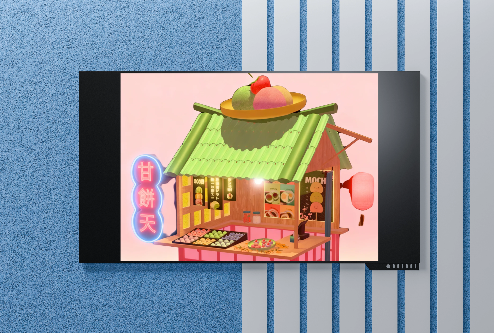
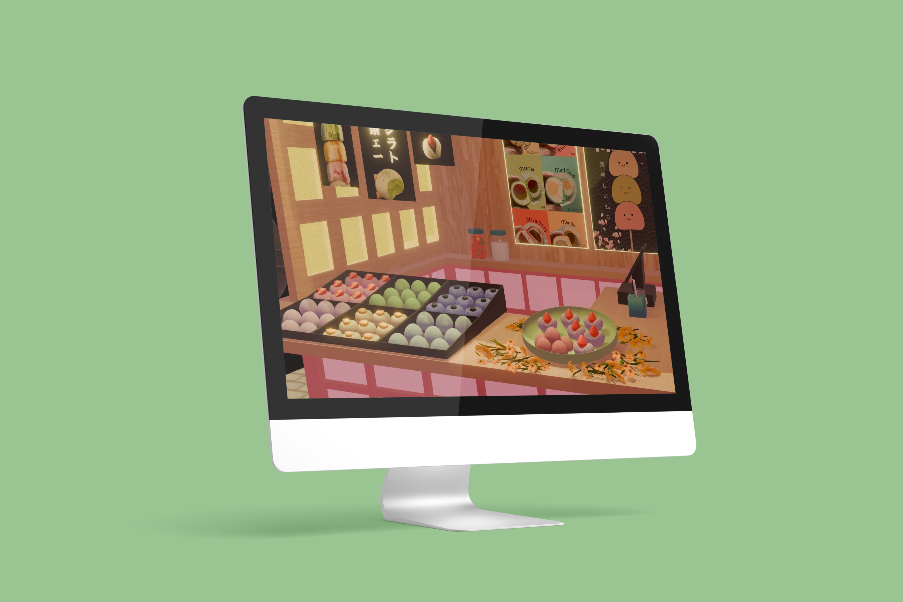
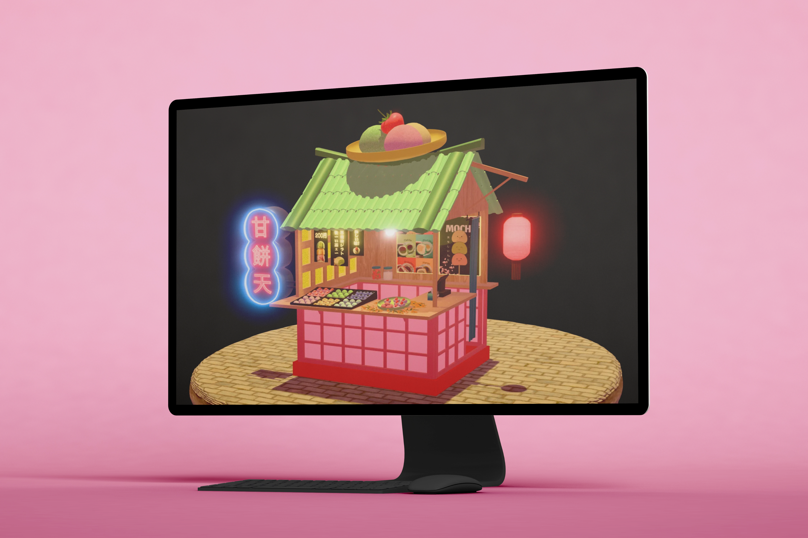

3D Food Kiosk
3D Food Kiosk in Blender
Een 3D-scene van een food kiosk in een neon-achtige nachtsetting, met aandacht voor vorm, sfeer en visuele compositie.
Doel
Dit project onderzoekt hoe een scène een sterke uitstraling kan krijgen door middel van vorm, materiaalkeuzes en een duidelijke nachtelijke sfeer.
Uitwerking
De kiosk is ontworpen als een kleurrijke food stand met een sterke sfeer. Ik speelde met toon, vorm, verlichting en een stylized uitstraling zodat de scene direct een verhaal vertelt.
Ik experimenteerde met modelleren, texturing en compositie in Blender om een duidelijke visuele identiteit te bouwen die past bij de gewenste nachtelijke ambiance.
Bekijk de scene
De renders laten de kiosk zien in een nachtelijke setting met neon-licht, warme materialen en een compact retail-concept dat visueel direct werkt.

